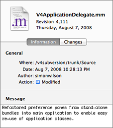
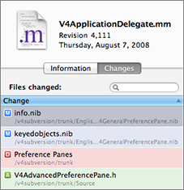

The timeline inspector displays information about the revision selected in the timeline view. The inspector has two tabs: the Information and Changes tabs.
The Information tab displays the date, author and log comment of the selected revision:

If issue tracking support is enabled (see Integrating with Issue Tracking Systems for more information), matching issue numbers are displayed as hyperlinks. Clicking on the hyperlink will open a browser window on the issue's page in the issue tracking system.
The changes tab lists the files which were changed in this revision:

You can use the search field to find files with matching names or paths.
If an item was branched, (i.e. copied or moved), the source revision and path are displayed at the bottom of the inspector when the item is selected in the change list.
The following icons are used in the change table to represent the type of change committed:
| The item was imported or branched. | |
|
The item was deleted. If the item was branched in the same revision then this indicates a move or rename operation. |
|
The item's contents or properties were modified. |
|
The item was replaced, i.e. removed and added in the same revision. |